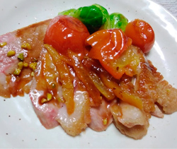

鴨肉と金柑のロースト
- 調理時間：30分
- （一人当たり）
- カロリー：398kcal
- たんぱく質：42.5g
- 脂質：15.8g
- 炭水化物：20.1g
- 塩分：1.4g


＜2人分＞
- 鴨肉
- 1枚
(350～400g) - 塩、コショウ
- 少々
- 植物油
- 少々
- 金柑の甘露煮
- 4～5個
- 柚子
- 1個
- しょうゆ
- 数滴
- ピスタチオ
- お好みで
- 添えの野菜
（今回は芽キャベツ） - お好みで

- 【下準備】
＜鴨肉＞
鴨肉は余分な脂や白っぽい薄い膜があれば、丁寧に取り除く。
焼いたときに脂が出やすくするためと、見た目がよくなるように、皮に切り目をいれる。
全体に塩、コショウを振る。 - <金柑の甘露煮>※お節料理の残りがあればそれを
(1)金柑は洗ってヘタを除く。
(2)鍋に金柑とひたひたの水を入れて火にかける。
(3)沸いたら弱火にして10分位茹でる。
(4)金柑の重さに対し50～60％の砂糖を準備して、数回に分けて加えて、炊き、味を含んだら完成。 - 【作り方】
柚子の種を取り除き、細切りにする。
ピスタチオは粗めに刻む。 - フライパンに植物油をひき、鴨肉の皮目を下にして入れ、中火にかける。
3分ほど加熱して焼き色がついたら裏返し、フタをして、さらに3分くらい加熱する。
中まで火が通ったかを確認し、火から下ろす。 - ②のフライパンの脂をキッチンペーパーでふき取り、①の柚子、金柑の甘露煮、水100mlを加えて煮詰める（水は加減しながら加える）。
仕上げに醤油を香り付けで加える。 - ローストした鴨肉は食べやすい大きさに切り分け、③のソースをかけて仕上げにピスタチオを散らす。
鴨肉と金柑のロースト
日本で鴨料理といえば、鴨南蛮ソバや鴨鍋など。カモがネギを背負ってくる、ということわざ通り、ネギと鴨肉の相性は抜群であり、古くから鴨肉は庶民に愛されてきたことが分かります。もちろん、海外でも鴨肉をつかった料理は様々で、フランス料理においては、高級食材のひとつ。フランス料理で鴨肉はフルーツと合わせて供されることが多く、オレンジを使ったソースや、カシスやベリーを使ったソースが有名です。今回のレシピは、鴨肉と縁起物の金柑（金冠）を合わせました。新たな年に運も呼び込みましょう。